<!DOCTYPE html><html><head><meta charset="utf-8"><title>教学讲义 | 技术学派</title><meta name="viewport" content="width=device-width,initial-scale=1,maximum-scale=1"><meta name="keywords" content="IT培训, Python, 大数据, 人工智能, Web前端, PHP, "><meta name="description" content="第一章 网络概述第一节 局域网和广域网局域网LAN—Local Area Network又被称为内网、私网、本地网，内网一般是指在某一区域内由多台计算机互联成的计算机组。局域网是封闭型的。所谓广域网（简称WAN)，是指一种跨地区的数据通讯网络，通常包含一个国家或地区。　　广域网WAN—Wide Area Network又被称为外网、公网、远程网，是指一种跨地区的数据通讯网络,通常包含一个国家或地区"><meta property="og:type" content="website"><meta property="og:title" content="教学讲义"><meta property="og:url" content="http://www.JiShuXuePai.com/tech/serve/notes.html"><meta property="og:site_name" content="技术学派"><meta property="og:description" content="第一章 网络概述第一节 局域网和广域网局域网LAN—Local Area Network又被称为内网、私网、本地网，内网一般是指在某一区域内由多台计算机互联成的计算机组。局域网是封闭型的。所谓广域网（简称WAN)，是指一种跨地区的数据通讯网络，通常包含一个国家或地区。　　广域网WAN—Wide Area Network又被称为外网、公网、远程网，是指一种跨地区的数据通讯网络,通常包含一个国家或地区"><meta property="og:locale" content="zh-CN"><meta property="og:image" content="http://www.jishuxuepai.com/tech/serve/images/net.jpg"><meta property="og:updated_time" content="2018-05-11T08:14:19.360Z"><meta name="twitter:card" content="summary"><meta name="twitter:title" content="教学讲义"><meta name="twitter:description" content="第一章 网络概述第一节 局域网和广域网局域网LAN—Local Area Network又被称为内网、私网、本地网，内网一般是指在某一区域内由多台计算机互联成的计算机组。局域网是封闭型的。所谓广域网（简称WAN)，是指一种跨地区的数据通讯网络，通常包含一个国家或地区。　　广域网WAN—Wide Area Network又被称为外网、公网、远程网，是指一种跨地区的数据通讯网络,通常包含一个国家或地区"><meta name="twitter:image" content="http://www.jishuxuepai.com/tech/serve/images/net.jpg"><link rel="stylesheet" href="/libs/bootstrap/bootstrap-grid.css"><link rel="stylesheet" href="/libs/font-awesome/css/font-awesome.min.css"><link rel="stylesheet" href="/libs/titillium-web/styles.css"><link rel="stylesheet" href="/libs/source-code-pro/styles.css"><link rel="stylesheet" href="/css/style.css"><script src="/libs/jquery/jquery.min.js"></script><link rel="stylesheet" href="/libs/lightgallery/css/lightgallery.min.css"><link rel="stylesheet" href="/libs/justified-gallery/justifiedGallery.min.css"><script>var _hmt=_hmt||[];!function(){var e=document.createElement("script");e.src="//hm.baidu.com/hm.js?4c1bd812de3c30edbaa2b803c66f0a04";var t=document.getElementsByTagName("script")[0];t.parentNode.insertBefore(e,t)}()</script></head></html><body><div id="wrap"><header id="header"><div id="header-outer" class="outer"><div class="container"><div class="container-inner"><div id="header-title"><h1 class="logo-wrap"><a href="/" class="logo"></a></h1></div><div id="header-inner" class="nav-container"><a id="main-nav-toggle" class="nav-icon fa fa-bars">菜单</a><div class="nav-container-inner"><ul id="main-nav"><li class="main-nav-list-item"><a class="main-nav-list-link" href="/">主页</a></li><li class="main-nav-list-item"><a class="main-nav-list-link" href="/edu/index.html">学编程</a></li><li class="main-nav-list-item"><a class="main-nav-list-link" href="/blog/">博客</a></li><li class="main-nav-list-item"><a class="main-nav-list-link" href="/nav.html">网站导航</a></li><li class="main-nav-list-item"><a class="main-nav-list-link" href="/tips.html">学习建议</a></li><li class="main-nav-list-item"><a class="main-nav-list-link" href="/about.html">关于</a></li></ul><nav id="sub-nav"><div id="search-form-wrap"><form class="search-form"><input type="text" class="ins-search-input search-form-input" placeholder="搜索"> <button type="submit" class="search-form-submit"></button></form><div class="ins-search"><div class="ins-search-mask"></div><div class="ins-search-container"><div class="ins-input-wrapper"><input type="text" class="ins-search-input" placeholder="想要查找什么..."> <span class="ins-close ins-selectable"><i class="fa fa-times-circle"></i></span></div><div class="ins-section-wrapper"><div class="ins-section-container"></div></div></div></div><script>window.INSIGHT_CONFIG={TRANSLATION:{POSTS:"文章",PAGES:"页面",CATEGORIES:"分类",TAGS:"标签",UNTITLED:"(未命名)"},ROOT_URL:"/",CONTENT_URL:"/content.json"}</script><script src="/js/insight.js"></script></div></nav></div></div></div></div></div></header><div class="container"><div class="main-body container-inner"><div class="main-body-inner"><section id="main"><div class="main-body-header"><h1 class="header"><em class="page-title-link" data-url="/tech/serve/notes.html">教学讲义</em><div class="author">江卫</div></h1></div><div class="main-body-content"><article id="page-" class="article article-single article-type-page" itemscope itemprop="blogPost"><div class="article-inner"><header class="article-header"><h1 class="article-title" itemprop="name">教学讲义</h1></header><div class="article-entry" itemprop="articleBody"><h1 id="第一章-网络概述"><a href="#第一章-网络概述" class="headerlink" title="第一章 网络概述"></a>第一章 网络概述</h1><h2 id="第一节-局域网和广域网"><a href="#第一节-局域网和广域网" class="headerlink" title="第一节 局域网和广域网"></a>第一节 局域网和广域网</h2><h3 id="局域网"><a href="#局域网" class="headerlink" title="局域网"></a>局域网</h3><p>LAN—Local Area Network又被称为内网、私网、本地网，内网一般是指在某一区域内由多台计算机互联成的计算机组。局域网是封闭型的。所谓广域网（简称WAN)，是指一种跨地区的数据通讯网络，通常包含一个国家或地区。　　</p><h3 id="广域网"><a href="#广域网" class="headerlink" title="广域网"></a>广域网</h3><p>WAN—Wide Area Network又被称为外网、公网、远程网，是指一种跨地区的数据通讯网络,通常包含一个国家或地区。 广域网通常由两个或多个局域网组成。</p><p>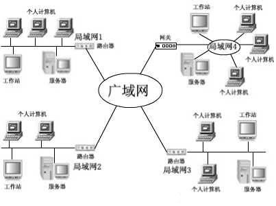</p><h2 id="第二节-网络设备"><a href="#第二节-网络设备" class="headerlink" title="第二节 网络设备"></a>第二节 网络设备</h2><h3 id="路由器"><a href="#路由器" class="headerlink" title="路由器"></a>路由器</h3><p>路由器（Router），是连接因特网中各局域网、广域网的设备，它会根据信道的情况自动选择和设定<em>路由</em>，以最佳路径，按前后顺序发送信号。</p><p>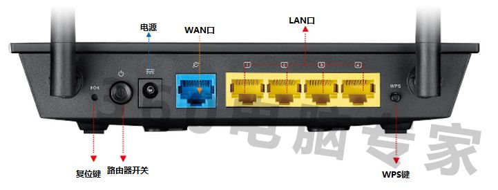</p><p>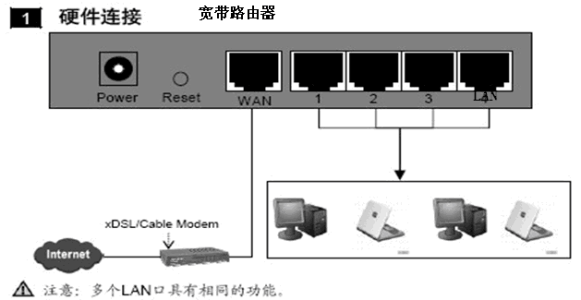</p><p>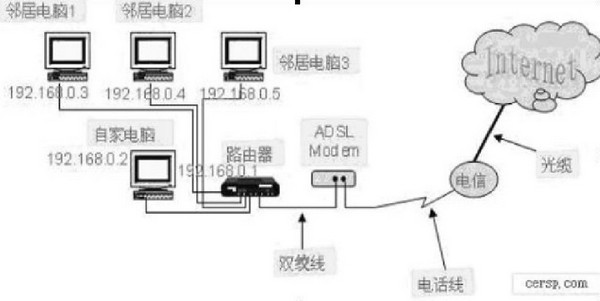</p><h3 id="网卡"><a href="#网卡" class="headerlink" title="网卡"></a>网卡</h3><p>网卡是工作在链路层的网络组件，是局域网中连接计算机和传输介质的接口，</p><p>按照网卡支持的传输速率分类，主要分为10Mbps网卡、100Mbps网卡、10/100Mbps自适应网卡和1000Mbps网卡四类</p><p></p><h1 id="第二章-网络协议"><a href="#第二章-网络协议" class="headerlink" title="第二章 网络协议"></a>第二章 网络协议</h1><blockquote><p>计算机网络是由许多计算机组成的，要实现网络的计算机之间传输数据，必须要作两件事，数据传输目的地址和保证数据迅速可靠传输的措施，这是因为数据在传输　过程中很容易丢失或传错，Internet使用一种专门的计算机语言(协议)，以保证数据安全、可靠地到达指定的目的地，这种语言分两部TCP(Transmission Control Protocol　传输控制协议)和 IP (Internet Protocol网间协议)。网络协议就是为计算机网络中进行数据交换而建立的规则、标准或约定的集合。</p></blockquote><h2 id="第一节-协议构架"><a href="#第一节-协议构架" class="headerlink" title="第一节 协议构架"></a>第一节 协议构架</h2><p>OSI(Open System Interconnection)是一个开放性的通信系统互连参考模型，他是一个定义得非常好的协议规范。OSI模型有7层结构，每层都可以有几个子层。 其中高层（即7、6、5、4层）定义了应用程序的功能，下面3层（即3、2、1层）主要面向通过网络的端到端的数据流。</p><h3 id="OSI的7层构架"><a href="#OSI的7层构架" class="headerlink" title="OSI的7层构架"></a>OSI的7层构架</h3><table><thead><tr><th>OSI 层</th><th>功能</th><th>TCP/IP协议族</th></tr></thead><tbody><tr><td>应用层</td><td>文件传输、电子邮件、文件服务、虚拟终端</td><td>TFTP HTTP SNMP FTP SMTP DNS RIP Telnet</td></tr><tr><td>表示层</td><td>数据格式化、代码转换、数据加密</td><td>没有协议</td></tr><tr><td>会话层</td><td>解除或建立与别的节点的联系</td><td>没有协议</td></tr><tr><td>传输层</td><td>提供端对端的接口</td><td>TCP UDP</td></tr><tr><td>网络层</td><td>为数据包选择路由</td><td>IP，ICMP，RIP，OSPF，BGP，IGMP</td></tr><tr><td>数据链路层</td><td>传输有地址的帧以及错误检测功能</td><td>SLIP，CSLIP，PPP，ARP，RARP，MTU</td></tr><tr><td>物理层</td><td>以二进制数据形式在物理媒体上传输数据</td><td>ISO2110，IEEE802，IEEE802.2，IEEE802.11</td></tr></tbody></table><h2 id="第二节-TCP-IP协议"><a href="#第二节-TCP-IP协议" class="headerlink" title="第二节 TCP/IP协议"></a>第二节 TCP/IP协议</h2><p>Transmission Control Protocol/Internet Protocol的简写，中译名为传输控制协议/因特网互联协议，又名网络通讯协议，是Internet最基本的协议、Internet国际互联网络的基础，由网络层的IP协议和传输层的TCP协议组成。TCP/IP 定义了电子设备如何连入因特网，以及数据如何在它们之间传输的标准。协议采用了4层的层级结构，每一层都呼叫它的下一层所提供的协议来完成自己的需求。通俗而言：TCP负责发现传输的问题，一有问题就发出信号，要求重新传输，直到所有数据安全正确地传输到目的地。而IP是给因特网的每一台联网设备规定一个地址。</p><h1 id="第三章-IP地址与端口"><a href="#第三章-IP地址与端口" class="headerlink" title="第三章 IP地址与端口"></a>第三章 IP地址与端口</h1><h2 id="第一节-ip地址格式"><a href="#第一节-ip地址格式" class="headerlink" title="第一节 ip地址格式"></a>第一节 ip地址格式</h2><p>IP地址是一个32位的二进制数，通常被分割为4个“8位二进制数”（也就是4个字节）</p><p>二进制：11000000 . 10101000 . 00001010 . 00001100</p><p>十进制：192 . 168 . 10 . 12</p><h2 id="第二节-ip地址划分"><a href="#第二节-ip地址划分" class="headerlink" title="第二节 ip地址划分"></a>第二节 ip地址划分</h2><p>互联网上的IP地址统一由一个叫IANA(Internet Assigned Numbers Authority，互联网网络号分配机构)的组织来管理。根据用途和安全性级别的不同，IP地址还可以大致分为两类：<code>公共地址</code>和<code>私有地址</code>。公用地址在Internet中使用，可以在Internet中随意访问。私有地址只能在内部网络中使用，在Internet上无法访问到（只有通过代理服务器才能与Internet通信）。</p><h2 id="第三节-保留地址"><a href="#第三节-保留地址" class="headerlink" title="第三节 保留地址"></a>第三节 保留地址</h2><p>10.0.0.0－10.255.255.255</p><p>172.16.0.0－172.31.255.255</p><p>192.168.0.0－192.168.255.255</p><p>127.0.0.1 （本机）</p><p>这些地址被大量用于企业内部网络中。一些宽带路由器，也往往使用192.168.1.1作为缺省地址。</p><h3 id="IPv4与IPv6"><a href="#IPv4与IPv6" class="headerlink" title="IPv4与IPv6"></a>IPv4与IPv6</h3><p>IPv4（IP协议4.0版）使用32位地址。这意味着，最多只有4,294,967,296(40多亿)个地址，</p><p>IPv6（IP协议6.0版）中IP地址的长度为128位，增加了340万亿个IP地址，增加了8万倍 ，几乎可以不受限制地提供地址，2012年6月6日，国际互联网协会举行了世界IPv6启动纪念日，这一天，全球IPv6网络正式启动。</p><h2 id="第四节-端口"><a href="#第四节-端口" class="headerlink" title="第四节 端口"></a>第四节 端口</h2><blockquote><p>端口一般是指TCP/IP协议中的端口号，可以认为是计算机与外界通讯交流的出口，端口号的范围(2^16)从0到65535</p></blockquote><p>常用端口：</p><p>http：80</p><p>ftp：21</p><p>mysql：3306</p><p>QQ：4000（动态）</p><p>微信：5222 5223 5228 80 8080 443（动态）</p><h1 id="第三章-建站"><a href="#第三章-建站" class="headerlink" title="第三章 建站"></a>第三章 建站</h1><h2 id="第一节-硬件—服务器"><a href="#第一节-硬件—服务器" class="headerlink" title="第一节  硬件—服务器"></a>第一节 硬件—服务器</h2><h3 id="web服务器"><a href="#web服务器" class="headerlink" title="web服务器"></a>web服务器</h3><blockquote><p>Web服务器一般指网站服务器，是指驻留于因特网上某种类型计算机的程序，可以向浏览器等Web客户端提供文档，也可以放置网站文件，让全世界浏览；可以放置数据文件，让全世界下载。主流的三个Web服务器程序是: Apache、 Tomcat、 IIS。</p></blockquote><ul><li>独立服务器</li></ul><p></p><ul><li>虚拟主机</li></ul><p>虚拟主机，也叫“网站空间”，就是把一台运行在互联网上的物理服务器划分成多个“虚拟”服务器。在外界看来，每一台虚拟主机和一台单独的主机的表现完全相同。所以这种被虚拟化的逻辑主机被形象地称为“虚拟主机”。虚拟主机技术极大的促进了网络技术的应用和普及。同时虚拟主机的租用服务也成了网络时代的一种新型经济形式。</p><p></p><p>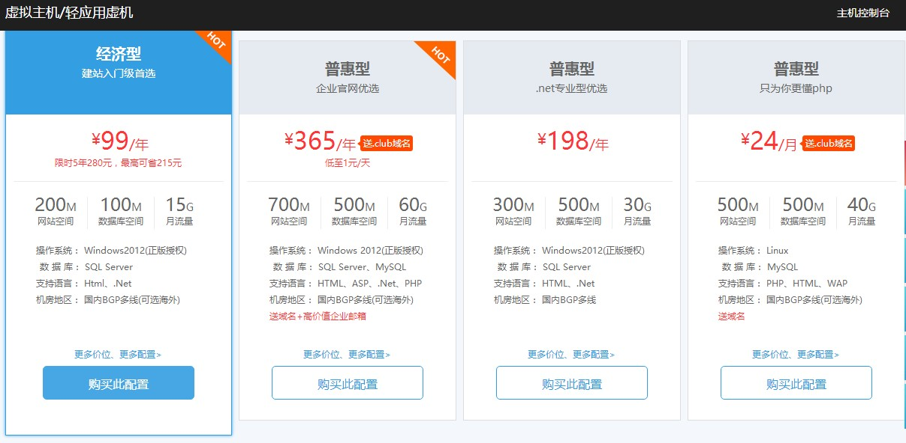</p><h2 id="第二节-接入互联网"><a href="#第二节-接入互联网" class="headerlink" title="第二节 接入互联网"></a>第二节 接入互联网</h2><p>去电信部门申请一条能够连接互联网的线路—互联网专线（得到ip地址）</p><p>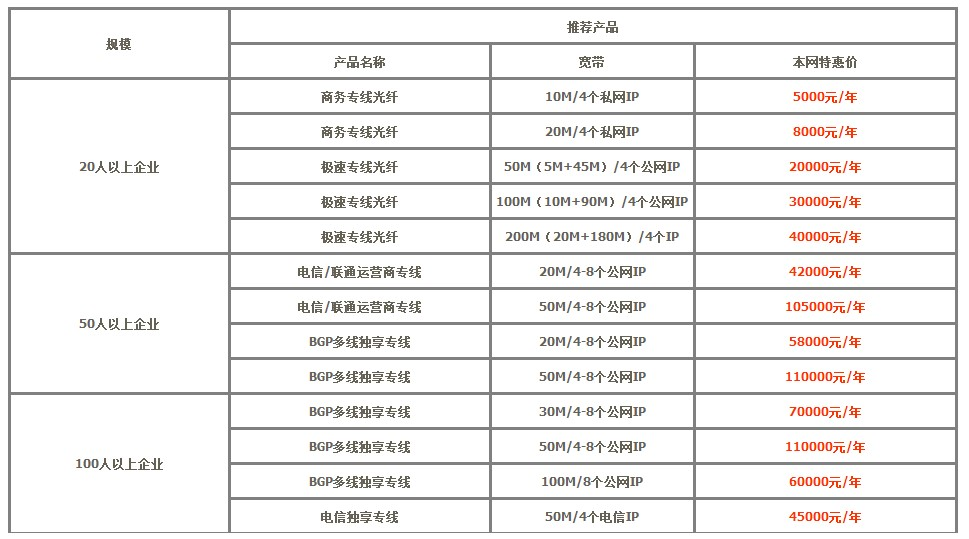</p><h2 id="第三节-申请域名"><a href="#第三节-申请域名" class="headerlink" title="第三节 申请域名"></a>第三节 申请域名</h2><h3 id="域名"><a href="#域名" class="headerlink" title="域名"></a>域名</h3><blockquote><p>网络是基于TCP/IP协议进行通信和连接的，每一台主机都有一个唯一的标识固定的IP地址，以区别在网络上成千上万个用户和计算机。由于IP地址是数字标识，使用时难以记忆和书写，因此在IP地址的基础上又发展出一种符号化的地址方案，来代替数字型的IP地址。每一个符号化的地址都与特定的IP地址对应，这样网络上的资源访问起来就容易得多了。这个与网络上的数字型IP地址相对应的字符型地址，就被称为域名。</p></blockquote><h3 id="域名种类"><a href="#域名种类" class="headerlink" title="域名种类"></a>域名种类</h3><p>英文域名格式如下：域名由各国文字的特定字符集、英文字母、数字及“ - ” ( 即连字符或减号 ) 任意组合而成 , 但开头及结尾均不能含有“ - ”。 域名中字母不分大小写。域名最长可达 67 个字节 ( 包括后缀 .com 、.top、.tech、.net 、.org 、.biz等 ) 。 中文域名格式如下：各级域名长度限制在26个合法字符（汉字，英文a-z ，A-Z ，数字0-9 和 - 等均算一个字符）；不能是纯英文或数字域名，应至少有一个汉字。“-”不能连续出现。</p><p>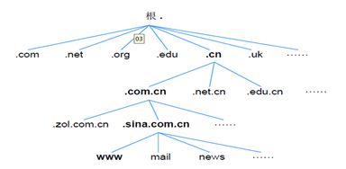</p><p>常见后缀形式：</p><p>COM 商业性的机构或公司 .</p><p>TOP机构公司个人</p><p>TECH科技、技术</p><p>ORG 非盈利的组织、团体</p><p>GOV 政府部门 .</p><p>MIL 军事部门 .</p><p>NET 从事Internet相关的的机构或公司；</p><p>AC 科研机构.</p><h3 id="申请域名"><a href="#申请域名" class="headerlink" title="申请域名"></a>申请域名</h3><p>在国内，可以通过新网、阿里云、数据中国等代理商申请域名</p><p>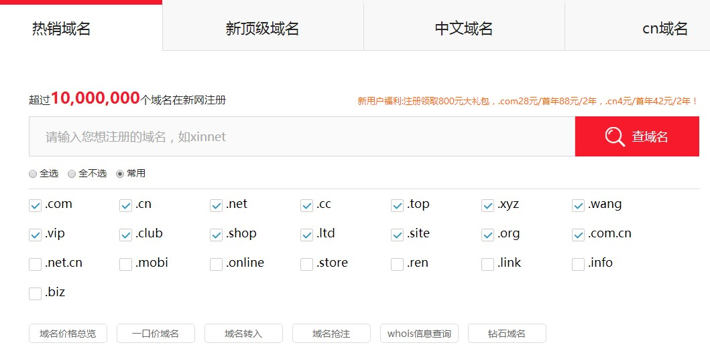</p><h2 id="第四节-域名解析"><a href="#第四节-域名解析" class="headerlink" title="第四节 域名解析"></a>第四节 域名解析</h2><p>域名解析就是域名到IP地址的转换过程。域名的解析工作由DNS服务器完成。DNS中保存了一张域名(domain name)和与之相对应的IP地址 (IP address)的表，以解析消息的域名。以在新网注册域名为例，接下来需要将域名与网络服务器的地址进行绑定：</p><ol><li>在新网注册的域名，并且使用新网域名解析服务器，都可以在域名自助管理平台(dcp.xinnet.com）,简称“DCP平台”)完成解析设置。</li></ol><p></p><ol start="2"><li>登录域名自助管理平台，使用域名和管理密码登陆到域名自助服务平台，点击“解析设置”进入解析页面。</li></ol><p>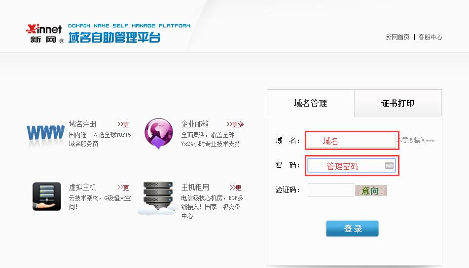</p><p>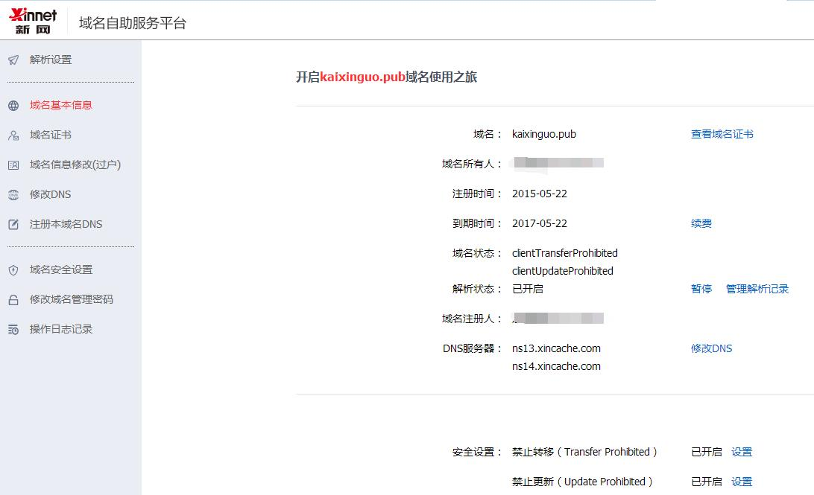</p><p>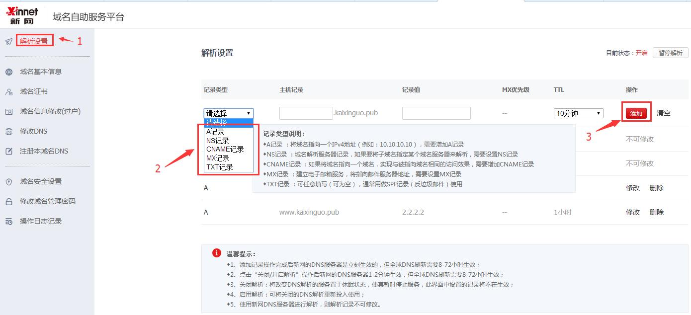</p><h1 id="第四章-网络服务器"><a href="#第四章-网络服务器" class="headerlink" title="第四章 网络服务器"></a>第四章 网络服务器</h1><h2 id="web服务器-1"><a href="#web服务器-1" class="headerlink" title="web服务器"></a>web服务器</h2><p>（略）</p><h2 id="ftp服务器"><a href="#ftp服务器" class="headerlink" title="ftp服务器"></a>ftp服务器</h2><blockquote><p>FTP服务器（File Transfer Protocol Server）是在互联网上提供文件存储和访问服务的计算机，它们依照FTP协议提供服务。 FTP是File Transfer Protocol(文件传输协议)。顾名思义，就是专门用来传输文件的协议。简单地说，支持FTP协议的服务器就是FTP服务器。</p></blockquote><h2 id="DNS服务器"><a href="#DNS服务器" class="headerlink" title="DNS服务器"></a>DNS服务器</h2><blockquote><p>DNS（Domain Name Server，域名服务器）是进行域名(domain name)和与之相对应的IP地址 (IP address)转换的服务器。DNS中保存了一张域名(domain name)和与之相对应的IP地址 (IP address)的表，以解析消息的域名。</p><p>根服务器主要用来管理互联网的主目录，全世界只有13台（这13台根域名服务器名字分别为“A”至“M”），1个为主根服务器在美国。其余12个均为辅根服务器，其中9个在美国，欧洲2个，位于英国和瑞典，亚洲1个位于日本。</p></blockquote><h2 id="DHCP服务器"><a href="#DHCP服务器" class="headerlink" title="DHCP服务器"></a>DHCP服务器</h2><blockquote><p>DHCP（Dynamic Host Configure Protocol，动态主机配置协议），可以为网络中的电脑动态分配ip地址，这种网络服务有利于对网络中的客户机IP地址进行有效管理，而不需要一个一个手动指定IP地址。如果网络中dhcp发生故障或者请求超时，系统会分配169.254.x.x这样一个地址，说明主机没有被分配ip地址。</p></blockquote><h3 id="CDN"><a href="#CDN" class="headerlink" title="CDN"></a>CDN</h3><p>CDN的全称是Content Delivery Network，即内容分发网络。CDN主要解决因分布、带宽、服务器性能带来的访问延迟问题，适用于站点加速、点播、直播等场景。</p><p>当用户访问加入CDN服务的网站时，域名解析请求将最终交给全局负载均衡DNS进行处理。全局负载均衡DNS通过一组预先定义好的策略，将当时最接近用户的节点地址提供给用户，使用户能够得到快速的服务。同时，它还与分布在世界各地的所有CDNC节点保持通信，搜集各节点的通信状态，确保不将用户的请求分配到不可用的CDN节点上，实际上是通过DNS做全局负载均衡。</p><p>对于普通的Internet用户来讲，每个CDN节点就相当于一个放置在它周围的WEB。通过全局负载衡DNS的控制，用户的请求被透明地指向离他最近的节点，节点中CDN服务器会像网站的原始服务器一样，响应用户的请求。由于它离用户更近，因而响应时间必然更快。</p></div><footer class="article-footer"><a data-url="http://www.JiShuXuePai.com/tech/serve/notes.html" data-id="cjhixf73u004khbfy3m7z09vo" class="article-share-link"><i class="fa fa-share"></i>分享到</a><script>!function(n){n("body").on("click",function(){n(".article-share-box.on").removeClass("on")}).on("click",".article-share-link",function(t){t.stopPropagation();var e,a=n(this),o=a.attr("data-url"),r=encodeURIComponent(o),i="article-share-box-"+a.attr("data-id"),s=a.offset();if(n("#"+i).length){if((e=n("#"+i)).hasClass("on"))return void e.removeClass("on")}else{var l=['<div id="'+i+'" class="article-share-box">','<input class="article-share-input" value="'+o+'">','<div class="article-share-links">','<a href="https://twitter.com/intent/tweet?url='+r+'" class="article-share-twitter" target="_blank" title="Twitter"></a>','<a href="https://www.facebook.com/sharer.php?u='+r+'" class="article-share-facebook" target="_blank" title="Facebook"></a>','<a href="http://pinterest.com/pin/create/button/?url='+r+'" class="article-share-pinterest" target="_blank" title="Pinterest"></a>','<a href="https://plus.google.com/share?url='+r+'" class="article-share-google" target="_blank" title="Google+"></a>',"</div>","</div>"].join("");e=n(l),n("body").append(e)}n(".article-share-box.on").hide(),e.css({top:s.top+25,left:s.left}).addClass("on")}).on("click",".article-share-box",function(t){t.stopPropagation()}).on("click",".article-share-box-input",function(){n(this).select()}).on("click",".article-share-box-link",function(t){t.preventDefault(),t.stopPropagation(),window.open(this.href,"article-share-box-window-"+Date.now(),"width=500,height=450")})}(jQuery)</script></footer></div></article><section id="comments"><div id="gitalk_frame"></div></section></div></section><aside id="sidebar"><a class="sidebar-toggle" title="Expand Sidebar"><i class="toggle icon"></i></a><div class="sidebar-top"><p>关注我 :</p><ul class="social-links"><li><a class="social-tooltip" title="火星时代" href="http://edu.hxsd.com/edunew/topics/webfull/index.html" target="_blank"><i class="icon fa fa-dribbble"></i></a></li><li><a class="social-tooltip" title="weibo" href="#" target="_blank"><i class="icon fa fa-weibo"></i></a></li><li><a class="social-tooltip" title="rss" href="/atom.xml" target="_blank"><i class="icon fa fa-rss"></i></a></li></ul></div><div class="widgets-container"><link rel="stylesheet" href="/css/tech/technology.css"><div class="widget-wrap widget-list"><div class="widget"><dl class="technology"><dt></dt><dd><p>网络服务器搭建</p><div class="notes"><a href="/tech/serve/notes.html">教学讲义</a></div><div class="row"><div class="col-4 change_blue"><a href="/tech/serve/case.html">1<br>案例</a></div><div class="col-4 plan"><a href="##">10<br>核心知识</a></div><div class="col-4 plan"><a href="##">10<br>文章</a></div></div><div class="row"><div class="col-6 plan"><a href="##">教学计划</a></div><div class="col-6"><a href="/tech/serve/relative.html">相关资料</a></div></div></dd></dl></div></div><link rel="stylesheet" href="/css/tech/toc.css"><div class="widget-wrap widget-list widget-toc"><h3 class="widget-title">目录</h3><div class="widget"><div class="toc"></div><link rel="stylesheet" href="https://cdnjs.cloudflare.com/ajax/libs/tocbot/3.0.5/tocbot.css"><script src="https://cdnjs.cloudflare.com/ajax/libs/tocbot/3.0.5/tocbot.min.js"></script><script>$(function(){$(".main-body-content").find("h1,h2,h3").each(function(t){$(this).attr("id")||$(this).attr("id","list"+t)}),tocbot.init({tocSelector:".toc",contentSelector:".main-body-content",headingSelector:"h1, h2, h3",collapseDepth:2,positionFixedSelector:".widget-toc",fixedSidebarOffset:595,includeHtml:!1})})</script></div></div><div class="widget-wrap widget-list"><h3 class="widget-title">链接</h3><div class="widget"><ul><li><a href="http://edu.hxsd.com/edunew/topics/webfull/index.html">火星时代</a></li></ul></div></div></div></aside><script>$(function(){$(window).scroll(function(){240<=$(document).scrollTop()?($("#sidebar .sidebar-toggle").addClass("fix"),"block"==$("#sidebar .sidebar-toggle").css("display")&&$(".is-position-fixed").css("top","35px")):$("#sidebar .sidebar-toggle").removeClass("fix")})})</script></div></div></div><footer id="footer"><div class="top"><div class="inner"><div class="list"><div class="left clearfix"><dl><dt>关于我们</dt><dd><a href="/about.html">公司简介</a></dd><dd><a href="edu/index.html">联系我们</a></dd></dl><dl><dt>校区攻略</dt><dd><a href="edu/index.html">校区环境</a></dd><dd><a href="edu/index.html">住宿攻略</a></dd><dd><a href="edu/index.html">来校路线</a></dd></dl><dl><dt>课程培训</dt><dd><a href="edu/python.html">Web前端</a></dd><dd><a href="edu/python.html">Python</a></dd><dd><a href="edu/python.html">人工智能</a></dd><dd><a href="edu/python.html">大数据</a></dd></dl><dl><dt>常见问答</dt><dd><a href="edu/index.html">学费学时</a></dd><dd><a href="edu/index.html">学习方法</a></dd></dl></div></div><div class="tel"><tel>176-0025-8815</tel><span>北京市海淀区杏石口路81号火星时代大厦</span></div><div class="weixin"><div class="w1"> <span>头条号</span></div><div class="w1"> <span>官方微信</span></div></div></div></div><div class="bot">Copyright 2018 技术学派 京ICP备15015508号-3</div></footer><link rel="stylesheet" href="https://unpkg.com/gitalk/dist/gitalk.css"><script src="https://unpkg.com/gitalk/dist/gitalk.min.js"></script><script>var gitalk=new Gitalk({clientID:"2fbbb9980b49019d99a7",clientSecret:"152dd10e83ef6595761ea2185304f9ac8263573f",repo:"jsxp",owner:"li-kang",admin:["li-kang"]});gitalk.render("gitalk_frame")</script><script src="/libs/lightgallery/js/lightgallery.min.js"></script><script src="/libs/lightgallery/js/lg-thumbnail.min.js"></script><script src="/libs/lightgallery/js/lg-pager.min.js"></script><script src="/libs/lightgallery/js/lg-autoplay.min.js"></script><script src="/libs/lightgallery/js/lg-fullscreen.min.js"></script><script src="/libs/lightgallery/js/lg-zoom.min.js"></script><script src="/libs/lightgallery/js/lg-hash.min.js"></script><script src="/libs/lightgallery/js/lg-share.min.js"></script><script src="/libs/lightgallery/js/lg-video.min.js"></script><script src="/libs/justified-gallery/jquery.justifiedGallery.min.js"></script><script src="/js/main.js"></script></div></body>